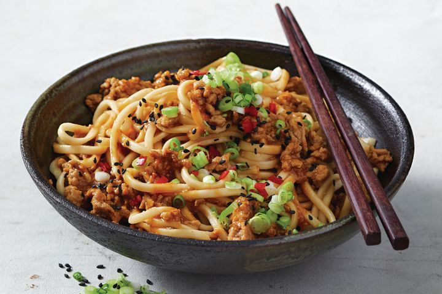

Udon Noodles

Ingredients
- 75g (1/4 cup) red miso paste
- 185ml (3/4 cup) oyster sauce
- 2 tbsp rice wine vinegar
- 1 tbsp sesame oil
- 750g pork mince
- 2 garlic cloves, crushed
- 2 tbsp finely grated fresh ginger
- 4 green shallots, thinly sliced
- 600g shelf-fresh udon noodles
Recipe
- Combine the miso paste, oyster sauce, vinegar and 250ml (1 cup) water in a bowl until smooth.
-
Heat the oil in a large frying pan or wok over medium-high heat.
Add the pork and cook, stirring occasionally, for 4 minutes or until just starts to brown.
Add the garlic and ginger. Cook, stirring, for 1 minute. Add the miso mixture and half the shallot.
Toss to combine. Reduce heat to medium and cook, stirring occasionally for 4-5 minutes or until the sauce thickens slightly.
Meanwhile, warm the noodles following packet directions. Drain. - Add noodles to pan and toss to combine then divide among serving bowls. Sprinkle with sesame seeds, chilli and remaining shallot to serve.